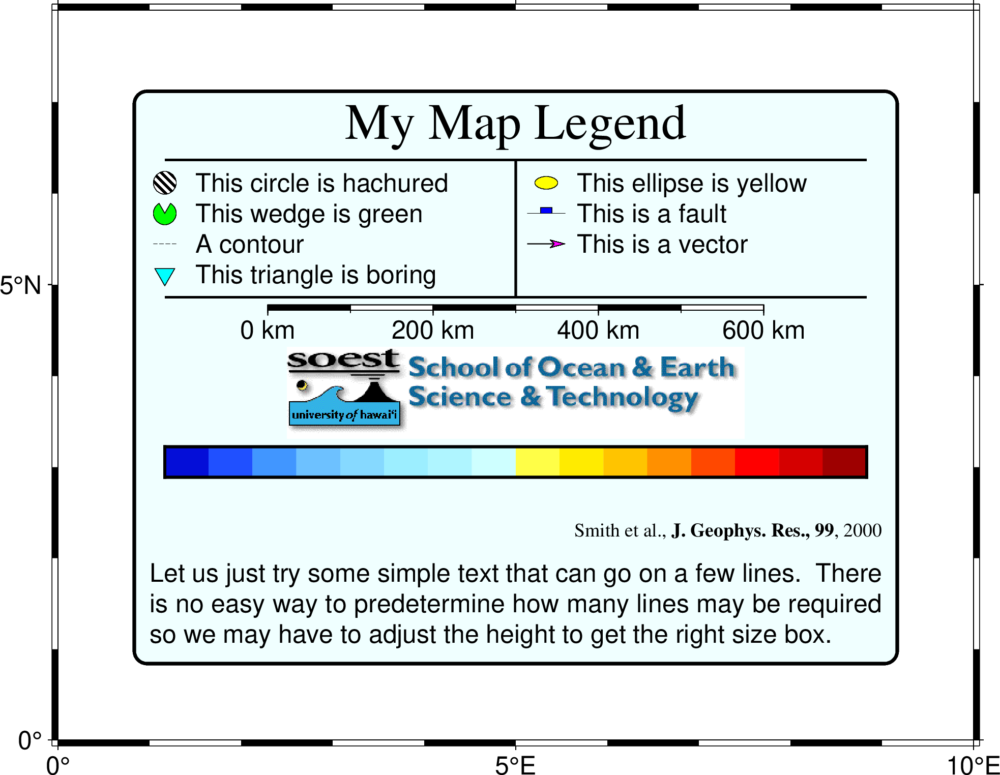
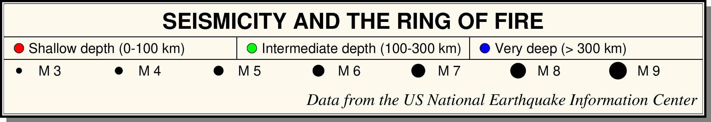

legend
- 官方文档:
- 简介:
在图上添加图例
legend 模块用于绘制图例，图例由图例文件控制。如无特别说明， 标注的字体由 FONT_ANNOT_PRIMARY 控制。 若图例中含有中文，必须将 FONT_ANNOT_PRIMARY 设置为中文字体。
语法
gmt legend
[ specfile ]
-Drefpoint
[ -B[p|s]parameters ]
[ -Fbox ]
[ -Jparameters ]
[ -M[h|e] ]
[ -Rregion ]
[ -Sscale ]
[ -Tfile ]
[ -U[stamp] ]
[ -V[level] ]
[ -X[a|c|f|r][xshift] ]
[ -Y[a|c|f|r][yshift] ]
[ -pflags ]
[ -qiflags ]
[ -ttransp ]
[ --PAR=value ]
输入数据
必须选项
- -D
- -D[g|j|J|n|x]refpoint+wwidth[/height][+jjustify][+lspacing][+odx[/dy]]
指定图例框的尺寸和位置
简单介绍各子选项的含义，详情见 修饰物
[g|j|J|n|x]refpoint指定地图上的参考点
+jjustify 指定图例框的锚点（默认锚点在左下角(BL)）
+odx/dy 在参考点的基础上设置图例框的额外偏移量
+wwidth[/height] 指定图例框的尺寸。若 height 为0或未指定， 则根据图例内容自动估算图例框高度。
+lspacing 设置图例里的行间距 [默认值1.1，即当前字体大小的1.1倍]
该选项几个比较有用的用法是：
将图例放在左下角： -DjBL+w4c+o0.2c/0.2c
将图例放在左上角： -DjTL+w4c+o0.2c/0.2c
将图例放在右下角： -DjBR+w4c+o0.2c/0.2c
将图例放在右上角： -DjTR+w4c+o0.2c/0.2c
可选选项
- -B
- -Bparameters
设置底图边框和轴属性。 (参数详细介绍)
- -F
- -F[+cclearances][+gfill][+i[[gap/]pen]][+p[pen]][+r[radius]][+s[[dx/dy/][shade]]]
控制图例的背景面板属性
若只使用
-F而不使用其它子选项，则绘制图例框。 下面简单介绍各子选项，详细用法见 修饰物+gfill 指定面板填充颜色 [默认不填充]
+ppen 绘制面板边框。pen 为边框的画笔属性，若不指定 pen， 则默认使用 MAP_DEFAULT_PEN
+r[radius] 绘制圆角边框，radius 为圆角的半径
+i[[gap/]pen] 在边框内部绘制一个内边框，gap 为内外边框空白距离 [默认为 2p]， pen 为内边框的画笔属性 [默认使用 MAP_DEFAULT_PEN]
+cclearance 设置修饰物与面板之间的空白距离。 默认情况下面板的大小由修饰物的大小决定，使用该子选项可以为面板增加额外的尺寸。 clearance 的具体设置包括下面 3 种情况：
gap 为四个方向增加相同的空白距离
xgap/ygap 分别为 X 方向和 Y 方向指定不同的空白距离
lgap/rgap/bgap/tgap 分别为四个方向指定不同的空白距离
+s[[dx/dy/][shade]] 设置面板背景阴影。dx/dy 为阴影区相对于面板的偏移量， shade 为阴影区颜色 [默认为 4p/-4p/gray50]
- -J
- -Jprojection
设置地图投影方式。 (参数详细介绍)
- -M
- -M[h|e]
仅限现代模式，设置如何同时使用由 specfile 图例文件设置的图例项和之前模块通过 -l 隐式设置的自动图例项：
h：由先前绘图模块的 -l 隐式设置的自动图例项
e：由 specfile 图例文件（或标准输入）显式提供的图例项
默认值为 he，即先绘制隐式设置的自动图例项，然后追加显式提供的图例项。 可以使用 eh 改变顺序，或 h 、 e 只绘制某一类图例。
注意：对于经典模式，必须提供图例文件或从标准输入读取。
- -R
- -Rxmin/xmax/ymin/ymax[+r][+uunit]
指定数据范围。 (参数详细介绍)
- -S
- -Sscale
对图例中的所有符号大小乘以 scale [默认值为 1]
- -T
- -Tfile
将隐藏的图例文件输出到文件中 [仅适用于现代模式]
现代模式下，某些模块（如 plot）可以使用 -l 选项自动编辑一个隐藏的图例文件。 在最终成图时，会根据这一图例文件绘制图例。 该选项可将该隐藏图例文件的内容保存到新文件中，使得用户可以在自动图例文件的基础 上做进一步自定义。
- -U
- -U[label][+c][+jjust][+odx/dy]
在图上绘制GMT时间戳logo。 (参数详细介绍)
- -V
- -V[level]
设置 verbose 等级 [w]。 (参数详细介绍)
- -X
- -Y
-X[a|c|f|r][xshift[u]]
- -Y[a|c|f|r][yshift[u]]
移动绘图原点。 (参数详细介绍)
- -p
- -p[x|y|z]azim[/elev[/zlevel]][+wlon0/lat0[/z0]][+vx0/y0]
设置3D透视视角。 (参数详细介绍)
- -qi
- -qi[~]rows[+ccol][+a|f|s]
筛选输入的行或数据范围。 (参数详细介绍)
- -t
- -t[transp]
设置图层透明度（百分比）。取值范围为0（不透明）到100（全透明）。 (参数详细介绍)
- -^ 或 -
显示简短的帮助信息，包括模块简介和基本语法信息（Windows下只能使用 -）
- -+ 或 +
显示帮助信息，包括模块简介、基本语法以及模块特有选项的说明
- -? 或无参数
显示完整的帮助信息，包括模块简介、基本语法以及所有选项的说明
- --PAR=value
临时修改GMT参数的值，可重复多次使用。参数列表见 配置参数
图例文件格式
图例文件用于控制图例中各项的布局。图例文件中的每个记录对应图例中的一项，图例中 每项的顺序由记录的先后顺序决定。每个记录的第一个字符决定了当前记录的图例类型。 GMT中共有14种图例类型，列举如下：
- # comment
以 # 开头的行或空行是注释行，会被跳过
- A cptname
指定CPT文件，使得某些记录可以通过指定Z值来设定颜色，可以多次使用该记录以 指定不同的CPT文件
- B cptname offset height [ optional arguments ]
绘制水平colorbar
offset 是colorbar相对于图例框左边界的距离
height 是colorbar高度，其后可以加上子选项 [+e[b|f][length]][+h][+m[a|c|l|u]][+n[txt]]
optional arguments 是 colorbar 模块的其它选项
- C textcolor
接下来的文本所使用的颜色
可以直接指定颜色，也可以用 z=val 指定Z值，以从CPT文件中查找相应的颜色 （CPT文件由 A 记录指定）。 若 textcolor 为 -，则使用默认颜色。
- D [offset] pen [-|+|=]
绘制一条水平线
offset 为线条左右顶端与图例边框的空白距离 [默认为0]
pen 为线条的画笔属性。若未指定 pen，则使用 MAP_GRID_PEN_PRIMARY。 若 pen 设置为 -，则绘制一条不可见的线（供 V 记录使用）
默认情况下，线条上下各留出四分之一的行间距，-|+|= 分别表示线条上方无空白、线条下方无空白和线条上下均无空白。
- F fill1 fill2 ... filln
指定单元的填充色。
可以直接指定颜色，也可使用 z=value 形式指定从CPT文件（由 A 记录指定）中查找颜色。 若只给定了一个 fill，则整行都使用相同的填充色，否则依次为当前行的 每列应用不同的 fill（列数由 N 记录控制）。若 fill 为 -，则不填充。
- G gap
给定一个垂直空白
空白的高度由 gap 决定，gap 可以用 i|c|p 单位， 也可以用 l 作为单位表示几倍行距的空白，gap 也可以取负值，表示将当前行上移。
- H font|- header
为图例指定一个居中的标题。
header 为标题，font 为文字属性。若字体为 - 则使用默认字体 FONT_TITLE。
- I imagefile width justification
将EPS或光栅文件放在图例中
width 为图片宽度；justification 为图片的对齐方式。
- L font|- justification label
在某一列增加指定的文字
label 为显示的文本，font 为字体。若 font 为 - 则使用默认字体 FONT_LABEL。justification 为对齐方式，可以取 L|C|R，分别表示左对齐、居中对齐和右对齐
- M slon|- slat length[+f][+l[label]][+u] [-Fparam] [ -Rw/e/s/n -Jparam ]
在图例中绘制比例尺。
slon 和 slat 用于指定绘制哪一点的比例尺。slon 仅对特定的倾斜投影有效。 对于一般投影，应设置为 -。
length 为比例尺长度，其后可以接长度单位，以及多个子选项。子选项的具体含义见 basemap 模块的 -L 选项。
若想要为比例尺加上背景面板，则可以使用 basemap 的 -F 选项。 此外，还可以加上 -R 和 -J 指定比例尺所使用的投影参数。
- N [ncolumns or relwidth1 relwidth2 ... relwidthn]
修改图例中的列数 [默认为1列]
该记录仅对 S 和 L 记录有效。该记录指定的列数会一直有效直到再次 使用 N 记录。 ncolumns 用于指定若干个等宽的列，relwidth1 relwidth2 ... relwidthn 用于指定每列所占的相对宽度，所有宽度的和应等于
-D选项所设置的宽度相等。- P paragraph-mode-header-for-pstext
在图例中添加文本段落，参考 text 命令中的段落模式
- S [dx1 symbol size fill pen [ dx2 text ]]
在图例中绘制符号或线段
dx1 符号中心与左边框的距离。若为 - 则自动设置为最大的符号大小的一半。 dx1 除了可以指定距离，还可以使用 L|C|R 表示符号在 当前列的对齐方式
symbol 指定要绘制的符号类型，见 plot 命令的 -S 选项。symbol 为 - 表示绘制线段
size 符号大小
fill 符号的填充色。使用 - 表示不填充。fill 也可以用 z=val 的形式从CPT文件中根据Z值查找颜色
pen 对于符号设置其轮廓属性，对于线段设置其画笔属性。使用 - 表示不绘制轮廓
dx2 是 text 与左边框的距离。使用 - 则自动设置为最大符号大小的1.5倍
text 是符号的文字说明，字体由 FONT_ANNOT_PRIMARY 控制
若只有 S 而不接其它任何信息，则直接跳至下一列。若 symbol 取 f q 或 v， 可以在符号后加上更多的子选项，详情见 plot 模块 -S 选项。 某些符号（例如矩形、椭圆等）需要指定多个 size，应将多个 size 用逗号 分隔作为 size 即可。如果只给了一个 size，则其余 size 由GMT默认值决定。
- T paragraph-text
打印一段文本，字体由 FONT_ANNOT_PRIMARY 控制。 若要指定位置和自定义排版，或插入段落分隔符，请使用 P 记录。
- V [offset] pen
V 使用画笔属性 pen 在列之间（如果有多个列）绘制一条垂直线。 偏移量 offset 类似于 D 的偏移量，但方向是垂直的[默认为0]。 第一次使用 V 时，会记住最后一条 D 线的垂直位置； 第二次使用 V 时，会从之前的位置绘制到最近一次 D 线的位置。 因此， D 必须用来标记垂直线的起点和终点（因此 V 必须紧跟 D，也就是说它们都必须使用两次，成对出现）。 如果不需要绘制水平线，只需为 D 提供“-”作为画笔即可。
默认值
对于如下符号，若用户不显式指定属性，绘制图例时使用如下默认值：
地理符号：如果 size 给定为 -，则默认使用当前标注字体大小的字符高度
线/矢量：如果 size 给定为 -，则默认长度为当前标注字体大小字符宽度的 2.5 倍
锋面（Front）符号 f： size 参数为 length[/gap[ticklength]]。 锋面符号为左侧（此处指上方）的方框，若未指定， ticklength 设置为给定符号 length 的 30%。 gap 默认为 -1。可以添加附加选项。
矢量符号 v：箭头大小为符号大小的30%
椭圆符号 e|E：主轴长度为符号大小，次轴长度是符号大小的65%，方位角为0
矩形符号 r：宽度为符号大小，高度为宽度的65%
旋转矩形符号 j|J：宽度为符号大小，高度为宽度的65%，旋转角度为30度
圆角矩形符号 R：宽度为符号大小，高度为宽度的65%，角半径为宽度的10%
数学圆弧符号 m|M：角度为 -10° 到 -45°，箭头大小为符号大小的30%
楔形符号 w：角度为 -30° 到 30°
关于图例高度的说明
-D 中省略 height 将自动估算图例框高度。不包含段落文本的图例会进行精确的计算。
对于包含段落文本的情况，仅对可能出现的排版行数进行一阶估计。由于无法获取字体度量信息，该估计偶尔会出现 1 行的偏差。
如果发生这种情况，请留意 -V 报告的高度，并在 -D 中指定一个略大或略小的高度。
Windows 注意事项
请注意，在 Windows 下，百分号 (%) 是变量标识符（类似于 Unix 下的 $）。 若要在批处理脚本中表示普通的百分号，需要将其重复两次 (%%)。 因此，字体切换机制（@%font% 和 @%%）可能需要双倍数量的百分号。 这仅适用于脚本内部或以其他方式由 CMD 处理的文本。由模块打开并读取的数据文件不需要这种双写重复。
示例
#!/usr/bin/env bash
gmt begin legend
gmt makecpt -Cpanoply -T-8/8/1 -H > tt.cpt
gmt set FONT_ANNOT_PRIMARY 12p
gmt legend -R0/10/0/8 -JM6i -Dx0.5i/0.5i+w5i+jBL+l1.2 -C0.1i/0.1i -F+p+gazure1+r -B5f1 << EOF
# Legend test for gmt pslegend
# G is vertical gap, V is vertical line, N sets # of columns, D draws horizontal line,
# H is ps=legend.ps
#
G -0.1i
H 24p,Times-Roman My Map Legend
D 0.2i 1p
N 2
V 0 1p
S 0.1i c 0.15i p300/12 0.25p 0.3i This circle is hachured
S 0.1i e 0.15i yellow 0.25p 0.3i This ellipse is yellow
S 0.1i w 0.15i green 0.25p 0.3i This wedge is green
S 0.1i f 0.25i blue 0.25p 0.3i This is a fault
S 0.1i - 0.15i - 0.25p,- 0.3i A contour
S 0.1i v 0.25i magenta 0.5p 0.3i This is a vector
S 0.1i i 0.15i cyan 0.25p 0.3i This triangle is boring
D 0.2i 1p
V 0 1p
N 1
M 5 5 600+u+f
G 0.05i
I @SOEST_block4.png 3i CT
G 0.05i
B tt.cpt 0.2i 0.2i -B0
G 0.05i
L 9p,Times-Roman R Smith et al., @%5%J. Geophys. Res., 99@%%, 2000
G 0.1i
T Let us just try some simple text that can go on a few lines.
T There is no easy way to predetermine how many lines may be required
T so we may have to adjust the height to get the right size box.
EOF
rm -f tt.cpt
gmt end show
{kind=link}

legend示例图1
#!/usr/bin/env bash
#
# Show a basic seismicity legend
#
gmt begin GMT_seislegend
gmt set FONT_ANNOT_PRIMARY 10p FONT_TITLE 18p FORMAT_GEO_MAP ddd:mm:ssF
# Create standard seismicity color table
gmt makecpt -Cred,green,blue -T0,100,300,10000 -N
# Create legend input file for NEIS quake plot
cat > neis.legend <<- END
H 16p,Helvetica-Bold SEISMICITY AND THE RING OF FIRE
D 0 0.5p
N 3
V 0 1p
S 0.25c c 0.25c red 0.25p 0.5c Shallow depth (0-100 km)
S 0.25c c 0.25c green 0.25p 0.5c Intermediate depth (100-300 km)
S 0.25c c 0.25c blue 0.25p 0.5c Very deep (> 300 km)
D 0 0.5p
V 0 0.5p
N 7
S 0.25c c 0.15c black - 0.75c M 3
S 0.25c c 0.20c black - 0.75c M 4
S 0.25c c 0.25c black - 0.75c M 5
S 0.25c c 0.30c black - 0.75c M 6
S 0.25c c 0.35c black - 0.75c M 7
S 0.25c c 0.40c black - 0.75c M 8
S 0.25c c 0.45c black - 0.75c M 9
N 1
G 9p
L 12p,Times-Italic RB Data from the US National Earthquake Information Center
END
gmt legend -Dx0/0+jBL+o0/1c+w18c -F+p+gfloralwhite+i0.25p+c2p+s neis.legend
rm neis.legend
gmt end show
{kind=link}

地震活动性图例示例
自动图例
在现代模式下，某些模块可以使用 -l 选项，并根据每个命令和参数自动构建图例（详细说明请参考 -l 选项 ）。
一些默认值是硬编码的：自动图例会绘制一个带有 1 磅黑色轮廓的白色矩形面板，并相对于对齐点 (+j) 偏移 0.2 厘米。
若要使用不同的设置，必须调用 legend 进行相应的设置进行覆盖。
注意：还可以使用 legend -T 来将自动图例保存为一个图例文件，对其进行自定义修改以便后续使用。